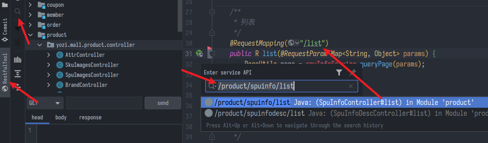
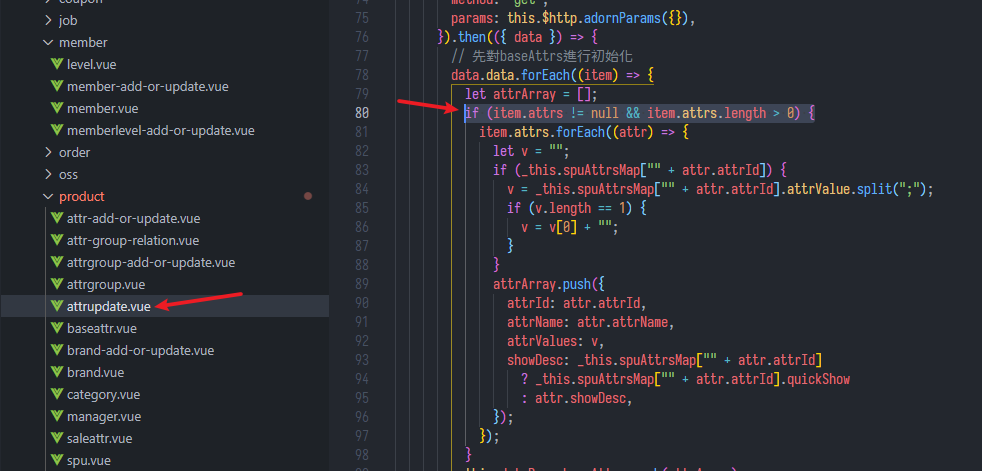
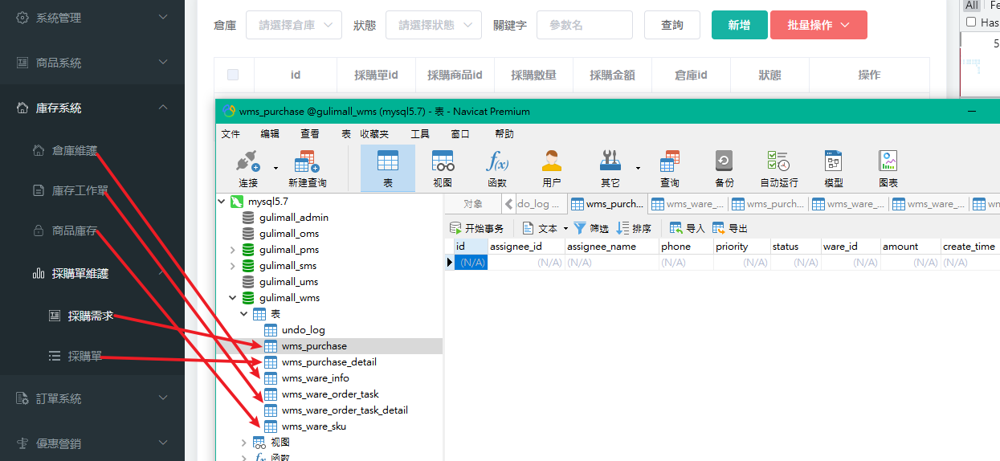
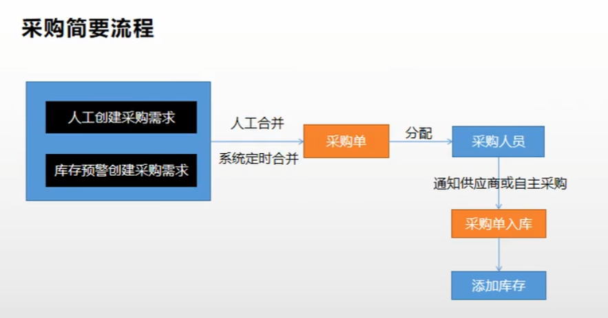
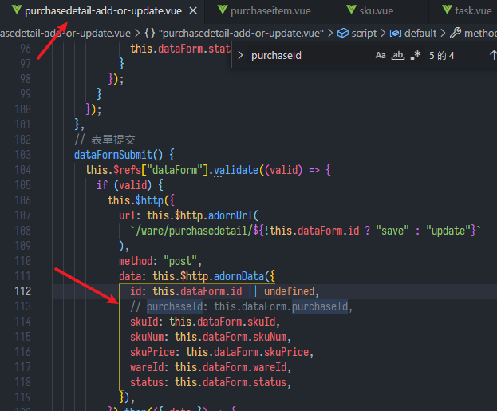
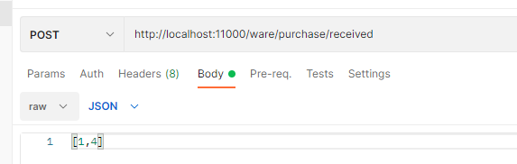
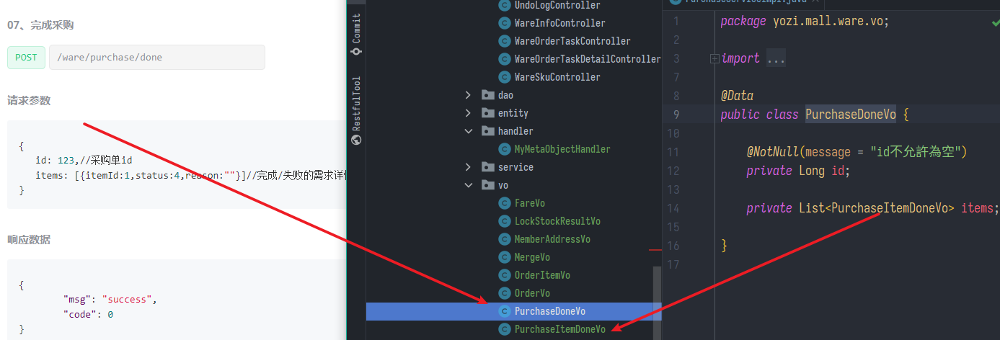
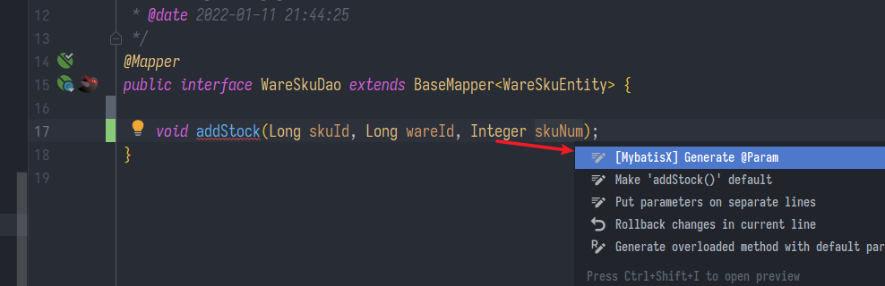

商品屬性維護、庫存模組、基礎篇總結
SpringBoot微服務項目筆記-07
商品屬性維護
spu檢索
- 一個快速找到API的方法
- 裝上插件
RestfulTool，直接貼上文檔給的URL瞬間就能定位
- 裝上插件

- SpuInfoServiceImpl.java
- 處理多條件模糊搜索
@Override
public PageUtils queryPageByKeyword(Map<String, Object> params) {
/*
key: '華為',//檢索關鍵字
catelogId: 6,//三級分類id
brandId: 1,//品牌id
status: 0,//商品狀態
*/
QueryWrapper<SpuInfoEntity> wrapper = new QueryWrapper<>();
String key = (String) params.get("key");
if (StringUtils.isNotBlank(key) && !"0".equalsIgnoreCase(key)) {
wrapper.and(w -> {
// 模糊搜索為了怕蓋掉下面的所以用and，其實也能放最後就好
// 優先 NOT>AND>OR
w.eq("id", key).or().like("spu_name", key);
});
}
String status = (String) params.get("status");
if (StringUtils.isNotBlank(status)) {
wrapper.eq("publish_status", status);
}
String catelogId = (String) params.get("catelogId");
if (StringUtils.isNotBlank(catelogId) && !"0".equalsIgnoreCase(catelogId)) {
wrapper.eq("catalog_id", catelogId);
}
String brandId = (String) params.get("brandId");
if (StringUtils.isNotBlank(brandId) && !"0".equalsIgnoreCase(brandId)) {
wrapper.eq("brand_id", brandId);
}
IPage<SpuInfoEntity> page = this.page(
new Query<SpuInfoEntity>().getPage(params), wrapper
);
return new PageUtils(page);
}
- 指定時間日期格式，application.properties
spring.jackson.date-format=yyyy-MM-dd HH:mm:ss
spring.jackson.time-zone=GMT+8
- 另外發現一個小BUG，保存時沒指定status狀態竟然不是0自己修正一下
- 不對後來發現是因為Vo用long用接，結果原來他在資料庫與entity中是int所以對不上，BeanUtils對拷失敗
- 其實這就存在一個坑點，就是前端校驗做不好，傳來null就算了，如果傳來0或"0"就容易坑
- 我感覺當初設計代號碼就該直接避開0，就像HTTP錯誤代碼也沒見用0的，反正int能用到127
- 但是預設0有時候又挺方便的，還是看實際狀況吧
獲取spu規格與修改
- AttrController.java
// 獲取spu規格
@GetMapping("/base/listforspu/{spuId}")
public R baseAttrlistforspu(@PathVariable("spuId") Long spuId) {
List<ProductAttrValueEntity> entities = productAttrValueService.baseAttrListforspu(spuId);
return R.ok().put("data", entities);
}
// 修改spu
@PostMapping("/update/{spuId}")
public R updateSpuAttr(@PathVariable("spuId") Long spuId,
@RequestBody List<ProductAttrValueEntity> entities) {
productAttrValueService.updateSpuAttr(spuId, entities);
return R.ok();
}
- ProductAttrValueServiceImpl.java
// 獲取spu規格
@Override
public List<ProductAttrValueEntity> baseAttrListforspu(Long spuId) {
List<ProductAttrValueEntity> attrValueEntityList = this.baseMapper.selectList(
new QueryWrapper<ProductAttrValueEntity>().eq("spu_id", spuId));
return attrValueEntityList;
}
/**
* 修改商品規格
*
* @param spuId
* @param entities
*/
@Transactional(rollbackFor = Exception.class)
@Override
public void updateSpuAttr(Long spuId, List<ProductAttrValueEntity> entities) {
// 1、刪除spuId之前對應的所有屬性
this.baseMapper.delete(new QueryWrapper<ProductAttrValueEntity>().eq("spu_id", spuId));
// 2、添加商品規格信息
List<ProductAttrValueEntity> collect = entities.stream().map(item -> {
item.setSpuId(spuId);
return item;
}).collect(Collectors.toList());
// 批量新增
this.saveBatch(collect);
}
- 前端又要補一個非空判斷，我感覺這是因為不同版本載入順序不同造成的BUG，暫且不深究

- 另外還有一個小BUG就是多選的屬性，只賦予單個值，且該值不屬於管理的屬性(attr表中可選的values，會出現在下拉表單中)，就是說那個值是save的時候或修改時現加的。會導致它在前端頁面修改屬性時回顯失敗(但資料庫中表格欄位沒錯)
sku檢索
- SkuInfoServiceImpl.java
- 大同小異，另外從網友那學到mybatisplus自帶的工具包
StringUtils.isNotBlank比Spring的!StringUtils.isEmpty更好用 - 另外注意價格區間搜索，前端預設傳來是0要做判斷
- 我注意到傳來的參數都轉成String處理，而mybatisplus搜索時也是會自動把String轉成資料庫中的對應的格式
- 總之都用String乍看沒毛病
- 大同小異，另外從網友那學到mybatisplus自帶的工具包
@Override
public PageUtils queryPageByKeyword(Map<String, Object> params) {
// key: '華為',//檢索關鍵字
// catelogId: 0,
// brandId: 0,
// min: 0,
// max: 0
QueryWrapper<SkuInfoEntity> wrapper = new QueryWrapper<>();
String key = (String) params.get("key");
if (StringUtils.isNotBlank(key) && !"0".equalsIgnoreCase(key)) {
wrapper.and(w -> {
// 模糊搜索為了怕蓋掉下面的所以用and，其實也能放最後就好
// 優先 NOT>AND>OR
w.eq("sku_id", key).or().like("sku_name", key);
});
}
String catelogId = (String) params.get("catelogId");
if (StringUtils.isNotBlank(catelogId) && !"0".equalsIgnoreCase(catelogId)) {
wrapper.eq("catalog_id", catelogId);
}
String brandId = (String) params.get("brandId");
if (StringUtils.isNotBlank(brandId) && !"0".equalsIgnoreCase(brandId)) {
wrapper.eq("brand_id", brandId);
}
String min = (String) params.get("min");
if (StringUtils.isNotBlank(min) && new BigDecimal(min).compareTo(BigDecimal.ZERO) > 0) {
wrapper.ge("price", min);
}
String max = (String) params.get("max");
if (StringUtils.isNotBlank(max) && new BigDecimal(max).compareTo(BigDecimal.ZERO) > 0) {
wrapper.le("price", max);
}
IPage<SkuInfoEntity> page = this.page(new Query<SkuInfoEntity>().getPage(params), wrapper);
return new PageUtils(page);
}
庫存模組
複習一下開新模組設定
- 啟動類註解掃描Mapper位置、開啟交易、開啟服務發現
- 其實交易跟Mapper可以省略
@EnableTransactionManagement
@MapperScan("yozi.mall.ware.dao")
@EnableDiscoveryClient
@SpringBootApplication
public class WareApplication {
- application.properties
- 我感覺還是.properties好用，不用在那邊對齊，複製貼上也快
# 服務註冊發現相關
server.port=11000
server.servlet.session.timeout=30m
spring.application.name=ware
spring.cloud.nacos.discovery.server-addr=localhost:8848
spring.cloud.nacos.config.server-addr=localhost:8848
# DB
spring.datasource.username=root
spring.datasource.password=root
spring.datasource.url=jdbc:mysql://localhost:3306/gulimall_wms?useUnicode=true&characterEncoding=UTF-8&serverTimezone=Asia/Shanghai
spring.datasource.driver-class-name=com.mysql.cj.jdbc.Driver
# mybatis-plus設定
mybatis-plus.mapper-locations=classpath:/mapper/**/*.xml
mybatis-plus.global-config.db-config.id-type=auto
# json日期時間格式
spring.jackson.date-format=yyyy-MM-dd HH:mm:ss
spring.jackson.time-zone=GMT+8
- 分頁插件，直接複製貼上
- 我感覺這種應該給common管理
- 回去設定網關規則，不要手賤轉換，.properties的數組很悲劇
spring:
cloud:
gateway:
routes:
- id: product_route
uri: lb://product
predicates:
- Path=/api/product/**
filters:
- RewritePath=/api/(?<segment>.*),/$\{segment}
- id: member_route
uri: lb://member
predicates:
- Path=/api/member/**
filters:
- RewritePath=/api/(?<segment>.*),/$\{segment}
- id: ware_route
uri: lb://ware
predicates:
- Path=/api/ware/**
filters:
- RewritePath=/api/(?<segment>.*),/$\{segment}
- id: upload_route
uri: lb://third-party
predicates:
- Path=/api/third-party/**
filters:
- RewritePath=/api/third-party/(?<segment>.*),/$\{segment}
- id: admin_route
uri: lb://renren-fast
predicates:
- Path=/api/**
filters:
- RewritePath=/api/(?<segment>.*),/renren-fast/$\{segment}
模組功能說明
- 表與後台的對應

- 基本單位是商品庫存id(wms_ware_sku表)，與一個商品sku_id對應，還有所在倉庫(關聯wms_ware_info表)與數量等等
- 從商品庫存id新增採購需求(wms_purchase_detail表)，多個採購需求id彙整成一個採購單id(wms_purchase表)，這邊包含採購人、總金額等等
- 從採購單id對應到庫存工作單(wms_ware_order_task)，這邊有採購單的配送狀態、物流、付款方式、任務進度等等，還能查看詳細採購的是那些sku(wms_ware_order_task_detail表)

幾個簡單的搜索
- 搜索倉庫列表，WareInfoServiceImpl.java
@Override
public PageUtils queryPage(Map<String, Object> params) {
QueryWrapper<WareInfoEntity> queryWrapper = new QueryWrapper<>();
String key = (String) params.get("key");
if (StringUtils.isNotBlank(key)) {
queryWrapper.eq("id", key)
.or().like("name", key)
.or().like("address", key)
.or().like("areacode", key);
}
IPage<WareInfoEntity> page = this.page(
new Query<WareInfoEntity>().getPage(params),
queryWrapper
);
return new PageUtils(page);
}
- 搜索採購需求，PurchaseDetailServiceImpl.java
@Override
public PageUtils queryPage(Map<String, Object> params) {
QueryWrapper<PurchaseDetailEntity> queryWrapper = new QueryWrapper<PurchaseDetailEntity>();
String key = (String) params.get("key");
if (StringUtils.isNotBlank(key)) {
queryWrapper.and(wrapper -> {
wrapper.eq("purchase_id", key).or().eq("sku_id", key);
});
}
String status = (String) params.get("status");
if (StringUtils.isNotBlank(status) && !"0".equalsIgnoreCase(status)) {
queryWrapper.eq("status", status);
}
String wareId = (String) params.get("wareId");
if (StringUtils.isNotBlank(wareId) && !"0".equalsIgnoreCase(wareId)) {
queryWrapper.eq("ware_id", wareId);
}
IPage<PurchaseDetailEntity> page = this.page(
new Query<PurchaseDetailEntity>().getPage(params),
queryWrapper
);
return new PageUtils(page);
}
- PurchaseServiceImpl.java
// 查詢未領取的採購單
@Override
public PageUtils queryPageUnreceive(Map<String, Object> params) {
QueryWrapper<PurchaseEntity> queryWrapper = new QueryWrapper<PurchaseEntity>()
.eq("status", 0).or().eq("status", 1);
IPage<PurchaseEntity> page = this.page(new Query<PurchaseEntity>().getPage(params), queryWrapper);
return new PageUtils(page);
}
合併採購需求
- PurchaseController.java
// 合併採購需求
@PostMapping("/merge")
public R merge(@RequestBody MergeVo mergeVo) {
purchaseService.mergePurchase(mergeVo);
return R.ok();
}
- PurchaseServiceImpl.java
// 合併採購需求
@Transactional(rollbackFor = Exception.class)
@Override
public void mergePurchase(MergeVo mergeVo) {
Long purchaseId = mergeVo.getPurchaseId();
// 沒有選擇任何【採購單】，將自動創建新單進行合併。
if (purchaseId == null) {
PurchaseEntity purchaseEntity = new PurchaseEntity();
// 設置採購單的預設狀態
purchaseEntity.setStatus(WareConstant.PurchaseStatusEnum.CREATED.getCode());
this.save(purchaseEntity);
// 獲取新建採購單的id
purchaseId = purchaseEntity.getId();
}
// 取出前端來的採購需求
List<Long> items = mergeVo.getItems();
// 確認採購單狀態是0,1(還沒買)才可以合併
Collection<PurchaseDetailEntity> purchaseDetailEntities = purchaseDetailService.listByIds(items);
purchaseDetailEntities.forEach((item) -> {
if (!item.getStatus().equals(WareConstant.PurchaseDetailStatusEnum.CREATED.getCode())
&& !item.getStatus().equals(WareConstant.PurchaseDetailStatusEnum.ASSIGNED.getCode())) {
throw new IllegalArgumentException("正在採購，無法進行分配");
}
});
// lambda表達式說要final變數
Long finalPurchaseId = purchaseId;
// 改變採購需求的狀態，併到這單上
List<PurchaseDetailEntity> collect = items.stream().map(i -> {
PurchaseDetailEntity purchaseDetailEntity = new PurchaseDetailEntity();
purchaseDetailEntity.setId(i);
purchaseDetailEntity.setPurchaseId(finalPurchaseId);
purchaseDetailEntity.setStatus(WareConstant.PurchaseDetailStatusEnum.ASSIGNED.getCode());
return purchaseDetailEntity;
}).collect(Collectors.toList());
//批量修改
purchaseDetailService.updateBatchById(collect);
PurchaseEntity purchaseEntity = new PurchaseEntity();
purchaseEntity.setId(purchaseId);
this.updateById(purchaseEntity);
}
- 受不了一直
new Date()，讓日期自動填充 - 常數類 WareConstant.java
- 才知道原來可以在一個類中寫多個enum
public class WareConstant {
public enum PurchaseStatusEnum {
CREATED(0, "新建"),
ASSIGNED(1, "已分配"),
RECEIVE(2, "已領取"),
FINISH(3, "已完成"),
HASERROR(4, "有異常"),
;
}
public enum PurchaseDetailStatusEnum {
CREATED(0, "新建"),
ASSIGNED(1, "已分配"),
BUYING(2, "正在採購"),
FINISH(3, "已完成"),
HASERROR(4, "採購失敗"),
- 這裡前端有一個BUG，當合併某些需求到採購單後，產生的採購單id，在ROM中為purchaseId，會汙染到新增完顯示的預設值(假象)
- 把這條ban了就好了，反正本來post就沒要傳接那麼多東西

領取採購單
- 暫時先假裝採購人員有個app之類能夠領取，驗證那些先不管，發給後端的就是採購單id構成的數組[]

- PurchaseController.java
// 領取採購單
@PostMapping("/received")
public R received(@RequestBody List<Long> ids) {
purchaseService.received(ids);
return R.ok();
}
- PurchaseServiceImpl.java
- //TODO 這裡有邏輯漏洞，沒分配也能領(員工自主搶活幹?)，會導致採購人那些欄位都是空的卻進入採購狀態，先留著吧
/**
* 領取採購單
* @param ids 採購單的id
*/
@Override
public void received(List<Long> ids) {
List<PurchaseEntity> collect = ids.stream().map(this::getById)
.filter(
// 1、確認當前採購單是新建或者是已分配狀態
item -> item.getStatus() == WareConstant.PurchaseStatusEnum.CREATED.getCode() ||
item.getStatus() == WareConstant.PurchaseStatusEnum.ASSIGNED.getCode())
.peek(
// 改變採購單狀態為已領取
item -> {
item.setStatus(WareConstant.PurchaseStatusEnum.RECEIVE.getCode());
}).collect(Collectors.toList());
// 保存
this.updateBatchById(collect);
// 改變採購需求的狀態
collect.forEach((item) -> {
// 用採購單號查其下的採購需求，且status<2(還沒去買)的
QueryWrapper<PurchaseDetailEntity> wrapper = new QueryWrapper<PurchaseDetailEntity>();
wrapper.and(q -> {
q.eq("purchase_id", item.getId());
q.lt("status", 2);
});
List<PurchaseDetailEntity> list = purchaseDetailService.list(wrapper);
List<PurchaseDetailEntity> detailEntities = list.stream().map(entity -> {
// 更新要拿出id
PurchaseDetailEntity purchaseDetailEntity = new PurchaseDetailEntity();
purchaseDetailEntity.setId(entity.getId());
purchaseDetailEntity.setStatus(WareConstant.PurchaseDetailStatusEnum.BUYING.getCode());
return purchaseDetailEntity;
}).collect(Collectors.toList());
purchaseDetailService.updateBatchById(detailEntities);
});
}
完成採購單
- API與Vo

請求body，第一個id是採購單號，裡面的itemId是採購需求號
{
"id": 8,
"items": [{"itemId":16,"status":3,"reason":""},{"itemId":17,"status":4,"reason":"缺貨"}]
}
- PurchaseServiceImpl.java
/**
* 完成採購單
*
* @param doneVo
*/
@Transactional(rollbackFor = Exception.class)
@Override
public void done(PurchaseDoneVo doneVo) {
// 採購單id
Long id = doneVo.getId();
// TODO 應該是要先判斷採購單與採購需求是否完成才能往下
// 改變採購需求的狀態
Boolean flag = true;
List<PurchaseItemDoneVo> items = doneVo.getItems();
List<PurchaseDetailEntity> updates = new ArrayList<>();
for (PurchaseItemDoneVo item : items) {
PurchaseDetailEntity purchaseDetailEntity = new PurchaseDetailEntity();
// 採購需求失敗
if (item.getStatus() == WareConstant.PurchaseDetailStatusEnum.HASERROR.getCode()) {
flag = false;
purchaseDetailEntity.setStatus(item.getStatus());
} else {
purchaseDetailEntity.setStatus(WareConstant.PurchaseDetailStatusEnum.FINISH.getCode());
// 將成功採購的進行入庫
// 查出當前採購項的詳細信息，入庫
PurchaseDetailEntity entity = purchaseDetailService.getById(item.getItemId());
wareSkuService.addStock(entity.getSkuId(), entity.getWareId(), entity.getSkuNum());
}
purchaseDetailEntity.setId(item.getItemId());
// 裝進更新的list
updates.add(purchaseDetailEntity);
}
// 批量更新
purchaseDetailService.updateBatchById(updates);
// 改變採購單狀態
PurchaseEntity purchaseEntity = new PurchaseEntity();
purchaseEntity.setId(id);
purchaseEntity.setStatus(flag ? WareConstant.PurchaseStatusEnum.FINISH.getCode() :
WareConstant.PurchaseStatusEnum.HASERROR.getCode());
this.updateById(purchaseEntity);
}
- WareSkuServiceImpl.java
@Transactional(rollbackFor = Exception.class)
@Override
public void addStock(Long skuId, Long wareId, Integer skuNum) {
// 某倉庫中的某sku應該是唯一的
WareSkuEntity isExistWareSku = wareSkuDao.selectOne(
new QueryWrapper<WareSkuEntity>().eq("sku_id", skuId).eq("ware_id", wareId));
if (isExistWareSku == null) {
// 判讀如果沒有這個庫存記錄，新增
WareSkuEntity wareSkuEntity = new WareSkuEntity();
wareSkuEntity.setSkuId(skuId);
wareSkuEntity.setStock(skuNum);
wareSkuEntity.setWareId(wareId);
wareSkuEntity.setStockLocked(0);
// 遠端查找setSkuName
R info = productFeignService.info(skuId);
Map<String, Object> data = (Map<String, Object>) info.get("skuInfo");
if (info.getCode() == 0) {
wareSkuEntity.setSkuName((String) data.get("skuName"));
}
// 添加庫存信息
wareSkuDao.insert(wareSkuEntity);
} else {
// 修改庫存信息
Integer oldStock = isExistWareSku.getStock();
wareSkuDao.addStock(skuId, wareId, oldStock + skuNum);
}
}
- 這邊又造了一個Feign接口，挺簡單的，在啟動類註解enable…
@FeignClient("product")
public interface ProductFeignService {
// 完成採購需求時，存表需要sku_name
@RequestMapping("/product/skuinfo/info/{skuId}")
R info(@PathVariable("skuId") Long skuId);
}
- 更新庫存數量寫了一個SQL，原來可以快速生成@Param

<update id="addStock">
UPDATE wms_ware_sku
SET stock = #{skuNum}
WHERE sku_id = #{skuId}
AND ware_id = #{wareId}
</update>
分佈式基礎篇總結
-
分佈式基礎概念
- 微服務、註冊中心（Nacos）、配置中心（Nacos Cofig）、遠程調用、Feign、網關
-
基礎開發
- SpringBoot2.0、SpringCloud、Mybatis-Plus、Vue組件化、雲存儲
-
環境
- Vagrant、Linux、Docker、MySQL、Redis、逆向工程&人人開源
-
開發規範
- 數據校驗JSR303、全局異常處理、全局統一返回、跨域處理
- 枚舉狀態、業務狀態、VO與TO與PO劃分、邏輯刪除
上次修改於 2022-01-24